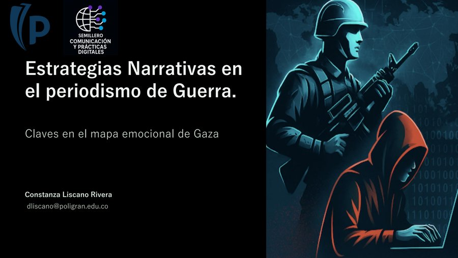
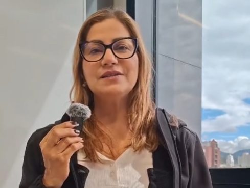
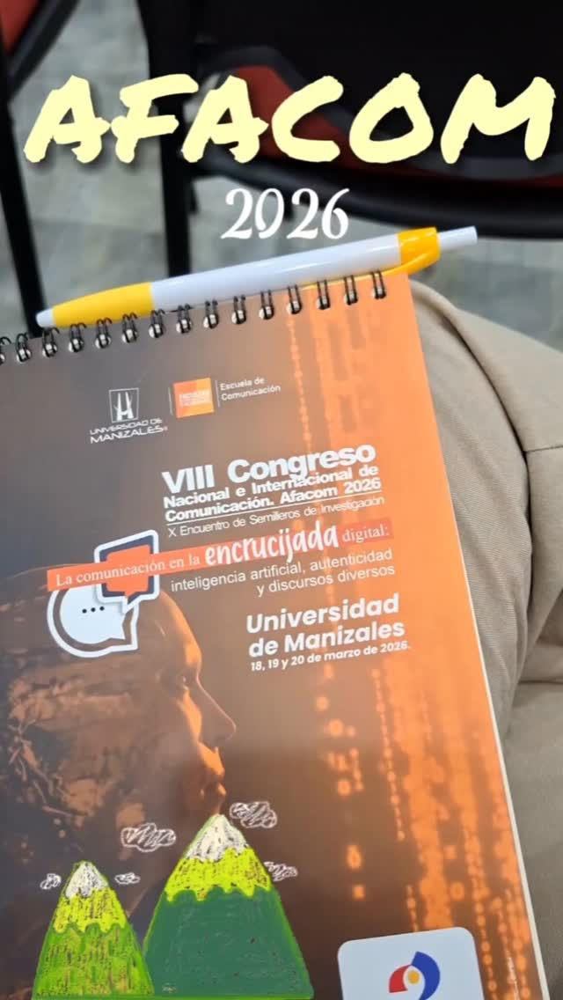
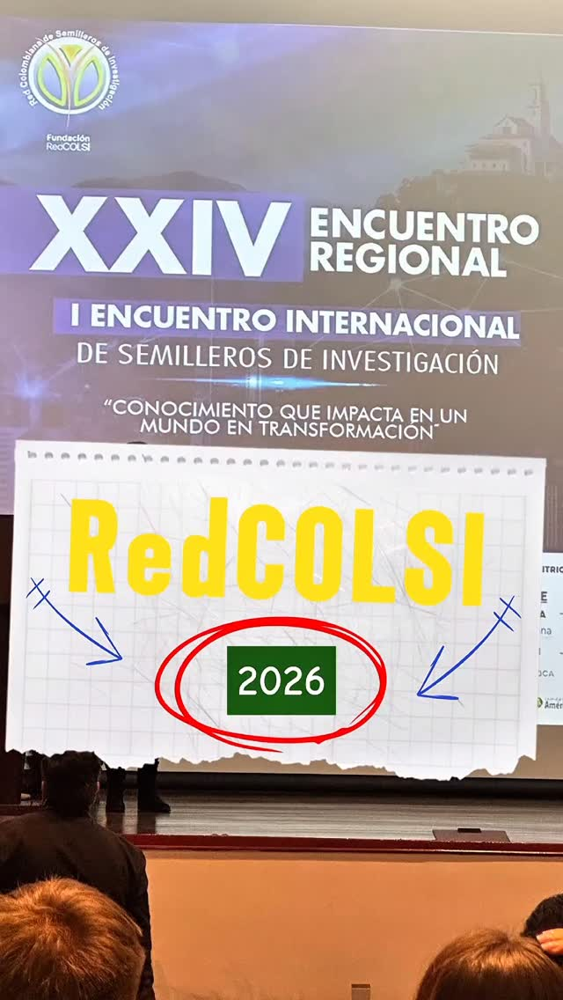
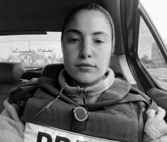

Pódcast
Pódcast
Lo que producimos Semillero CPD
Nuestro contenido
Pódcast, videos, animaciones, infografías y publicaciones que hemos desarrollado para llevar la investigación más allá del aula.
14 piezas
Pódcast
 Póster
Póster
Póster: VIII Encuentro Académico de ACICOM

PresentaciónEstrategias narrativas en el periodismo de guerra: claves en el mapa emocional de Gaza
Animación: Voces digitales en Palestina
 Prensa
Prensa
El Tiempo: Una línea en la arena, la crisis que dividió el Medio Oriente

VideoAsí nace el Semillero de Comunicación y Prácticas Digitales
¿Qué papel juega un periodista en un conflicto?

VideoAFACOM 2026: el periodismo en contextos de conflicto

VideoEncuentro regional de semilleros RedCOLSI, Universidad de La Salle
Publicación: ¿De verdad Gaza va camino a la paz?
 Prensa
Prensa
Artículo: Express News UK
Infografía: Reflexión sobre Motaz Azaiza
Infografía: Análisis sobre Plestia

InfografíaInfografía: Wizard Bisan
No hay piezas de este tipo por ahora.
Síguenos para no perderte nada
Publicamos nuestras piezas y avances de investigación en Instagram y TikTok.
Somos diferentes, somos Poli.